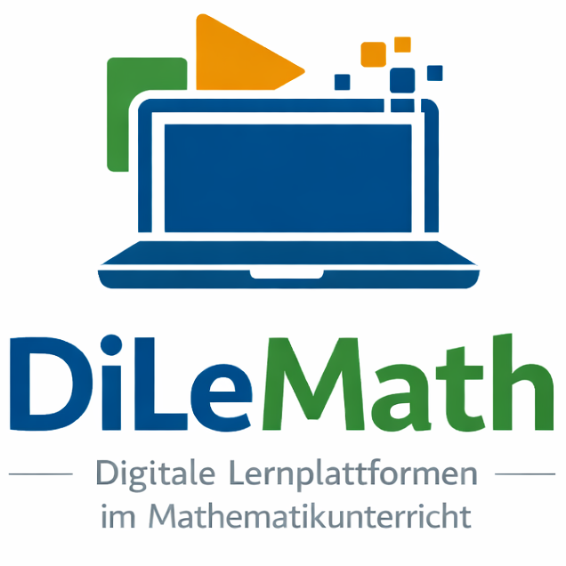

Math CaTS
Status: aktuell laufend
Laufzeit: 2025–2026
Förderung: Bielefelder Nachwuchsfonds, Universität Bielefeld
Math CaTS untersucht den didaktisch tragfähigen Einsatz von KI-Chatbots im Mathematikunterricht der Sekundarstufe. Im Zentrum steht die Frage, wie dialogische Interaktionen mit Systemen wie ChatGPT mathematisches Argumentieren, Selbstkontrolle und Reflexion von Lösungswegen unterstützen können.
Projektseite öffnen
Externe Projektseite

DiLeMath
Status: aktuell laufend
Laufzeit: 2024–laufend
Im Projekt DiLeMath werden digitale Lernplattformen und KI-Tools systematisch in der Lehramtsausbildung Mathematik erprobt. Ziel ist die Professionalisierung angehender Lehrkräfte im reflektierten, fachdidaktisch begründeten Einsatz digitaler Systeme.
Projektseite öffnen

KIVIMA (KI-unterstützte Visualisierungen im Mathematikunterricht)
Status: aktuell laufend
Laufzeit: 2025–2026
Förderung: Qualitätsfonds für Lehre, Universität Bielefeld
Das Projekt fokussiert die Entwicklung und Untersuchung KI-gestützter Visualisierungen für zentrale mathematische Inhalte in der Lehrkräftebildung. Ziel ist es, Studierenden didaktische Werkzeuge zur Verfügung zu stellen, mit denen komplexe Begriffe über multiple Darstellungen verständlich aufgebaut werden können.
Projektseite öffnen